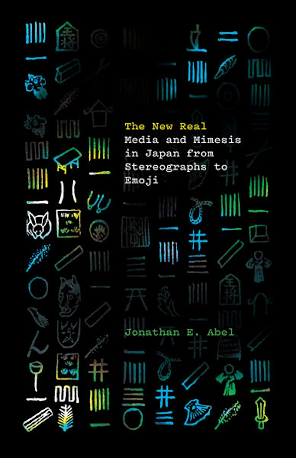
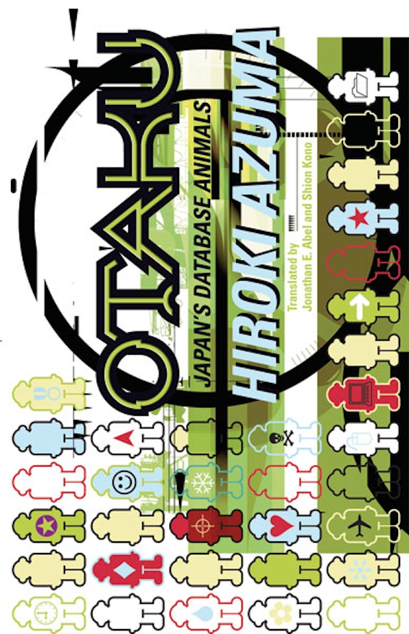

Professor of Comparative Literature and Japanese Studies
Penn State University
I am a professor of Comparative Literature and Japanese Studies at Penn State University. I work on how cultural forms—novels, films, emojis, social media fiction—make meaning and, in doing so, reshape the worlds we inhabit. My research focuses on Japanese media, film, and literature, with interests in global modernism, censorship, translation, new media, and cultural theory. My books include The New Real: Media and Mimesis in Japan from Stereographs to Emoji (University of Minnesota Press, 2023) and Redacted: The Archives of Censorship in Transwar Japan (University of California Press, 2012), which received the Weatherhead East Asia Institute First Book Award.
My path to Japanese literature was less a single conversion moment than a long drift: late‑night Godzilla and Seven Samurai TV broadcasts in the 1980s, judo classes that didn't quite stick, and an ill‑considered childhood bet involving a spoonful of wasabi. After college, two years on the JET Program in a small town on Japan's west coast and a multivolume, yellow‑covered bilingual edition of Sherlock Holmes (example volume) taught me to read across languages; later, making Japanese TV commercials in New York and Los Angeles deepened my interest in media and film.
I still think of myself as an "eternal student," and my favorite classes are the ones where students build things—arguments, stories, reshot film scenes—that transform how we all understand the texts and images in front of us. At heart, I'm trying to show that cultural products are not just entertainment but tools for grasping how the world works. Words can wound or console, films can unsettle or reassure, interfaces and buildings can quietly shape how safe or seen we feel. Comparative Literature, with its boundary‑breaking, hard‑to‑pin‑down nature, and Asian Studies, with its continual ability to get me to think outside of my own upbringing, are my homes for thinking about how cultural forms travel, echo, repeat with a difference, and construct our social world—even now, in a moment marked by pandemics, strife, AI, and rapid media change.
A digital project that geotags and visualizes film locations to reveal how space matters and what places mean for cinema.
Learn more →A quantitative network analysis of Japanese Literary Studies as an academic discipline—tracing dissertation networks, conference data, and citation patterns across 7,900+ dissertations and 5,100+ scholars.
Explore visualizations →Examines microfiction posted on Twitter and Instagram as test cases for policies about tagging fake news on social media.
Subtitling the World: Fake News, Fictional Truth, and Social Media explores how literature is changing the world today through micro-blog platforms.

University of Minnesota Press, 2023
Read Open Access →University of California Press, 2012. Winner, Weatherhead East Asia Institute First Book Award
View at UC Press →Co-edited with Seth Jacobowitz. University of Michigan Press, 2026
View at U of Michigan Press →Co-edited with Yoshiki Tajiri & Hiroki Yoshikuni. Verso, forthcoming 2026
View at Verso →Co-edited with Samuel Frederick & Michele Kennerly. Columbia University Press, 2021
View at Columbia UP →By Kojin Karatani. Co-translated with Hiroki Yoshikuni & Darwin Tsen. Oxford University Press, 2017
View at Oxford UP →
By Hiroki Azuma. Co-translated with Shion Kono. University of Minnesota Press, 2009
View on Amazon →I teach courses on Japanese literature, media studies, comparative literature, and translation. My favorite classes are the ones where students build things—arguments, stories, reshot film scenes—that transform how we all understand the texts and images in front of us.
Sign up for office hours using the online scheduling tool.
Email: jea17@psu.edu
Office: Department of Comparative Literature, Penn State University
Links: Google Scholar | Full CV